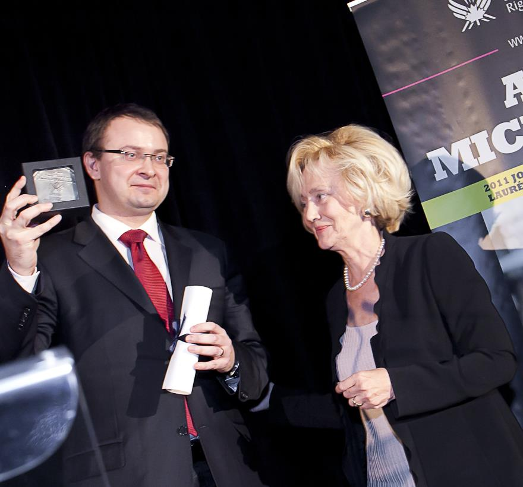

Igor Dovgal
Refugee law and extradition matters.
 MichalevicLaw Office
MichalevicLaw OfficeAles Michalevic’s own experience shaped the office’s focus. Cross-border cases span several areas of law, calling for lawyers with different specialisms.

Ales Michalevic
Trained as a lawyer, Ales ran for president of Belarus in 2010. After the election, he was charged in a mass-unrest case and had to leave for Europe. He was detained there more than once in connection with international pursuit, even after receiving political asylum in the Czech Republic.
By July 2012, information about him had been removed from INTERPOL’s files. In 2015, with the pursuit discontinued, he was able to return to Belarus. This experience shaped the office’s work for people facing unfounded or politically motivated international pursuit.
Ales founded and leads the office, works with human-rights organisations and helps develop defences in pursuit and extradition cases.
The office
A case may involve pursuit, extradition, asylum and immigration status at the same time. Lawyers with different specialisms work alongside Ales on these questions. An initial conversation with the manager helps determine who should discuss your case with you.
The office currently has a team of 11: four partners, four lawyers and three colleagues providing legal and administrative support.
Where several countries are involved, the office can also coordinate with lawyers and human-rights professionals on the ground. Representation in a national court is handled by a lawyer authorised to practise there.
Explore our areas of work →Refugee law and extradition matters.
Matters involving INTERPOL.
Immigration matters.
You can begin with a short account of your situation. The manager will help identify who can best discuss it with you.